1. ก่อนเริ่มใช้งาน
ระบบนี้ใช้ยืมและคืนอุปกรณ์ของสาขาผ่านเว็บ ไม่ต้องติดตั้งแอป เปิดเว็บเบราว์เซอร์ (Chrome, Edge หรือ Safari)
แล้วไปที่ https://172.16.46.130 ใช้ได้ทั้งคอมพิวเตอร์ แท็บเล็ต และมือถือ
ครั้งแรกที่เข้า เบราว์เซอร์อาจขึ้นหน้าเตือนว่า "การเชื่อมต่อไม่เป็นส่วนตัว" ไม่ได้แปลว่าเว็บอันตราย
แต่เป็นเพราะเซิร์ฟเวอร์ติดตั้งอยู่ในเครือข่ายของคณะเอง ให้กด ขั้นสูง (Advanced) แล้วกด
ดำเนินการต่อ (Proceed) ถ้าติดตั้งใบรับรองตามหัวข้อ 12 แล้ว หน้าเตือนนี้จะไม่ขึ้นอีก
คู่มือฉบับนี้ใช้ได้กับผู้ยืมทั้ง 2 แบบ
- นักศึกษา สมัครบัญชีเองได้จากหน้าเว็บ และใช้รหัสนักศึกษา 10 หลักเข้าสู่ระบบ
- อาจารย์ที่ต้องการยืมอุปกรณ์ สมัครเองไม่ได้ ให้ติดต่อเจ้าหน้าที่ห้องพัสดุเพื่อสร้างบัญชีให้
แล้วใช้รหัสประจำตัวบุคลากร (เช่น KIT.SA06) เข้าสู่ระบบ
เปิดคู่มือนี้ได้ทุกเมื่อจากไอคอนรูปหนังสือที่มุมขวาบนของระบบ
2. สมัครใช้งาน (นักศึกษา)
นักศึกษาที่ยังไม่มีบัญชีสมัครได้เองตามขั้นตอนนี้ ใช้เวลาประมาณ 2 นาที
- ที่หน้าเข้าสู่ระบบ กด ลงทะเบียน
- กรอกคำนำหน้า ชื่อ และนามสกุลตามบัตรนักศึกษา ถ้าไม่มีนามสกุลให้ใส่เครื่องหมาย -
- กรอกรหัสนักศึกษา 10 หลัก ระบบจะแสดงปีการศึกษา ชั้นปี และหลักสูตร (ปกติหรือเทียบโอน) ให้ทันที
โดยดูจากรหัส ถ้าเป็นนักศึกษาเทียบโอน ให้เลือกจำนวนปีของหลักสูตรที่เรียนเพิ่ม
- กรอกอีเมลของสถาบัน (ลงท้าย @cdti.ac.th) เบอร์โทรศัพท์ ตั้งรหัสผ่านอย่างน้อย 8 ตัว และเลือกสาขา
- เปิดอ่านคำชี้แจงการใช้ข้อมูลส่วนบุคคล ติ๊กยอมรับ แล้วกด ลงทะเบียน
- เปิดอีเมลของสถาบัน แล้วกดลิงก์ยืนยันอีเมลที่ระบบส่งไป
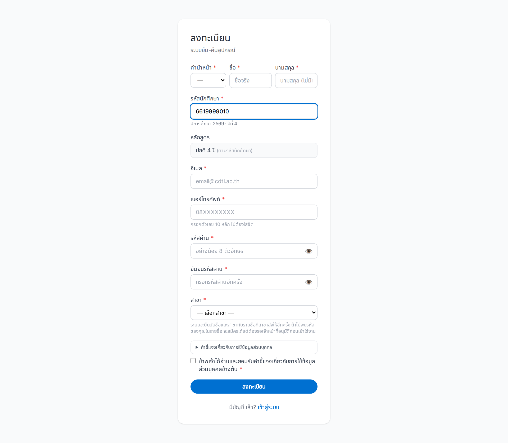
หน้าลงทะเบียน เมื่อพิมพ์รหัสนักศึกษาแล้ว ระบบแสดงชั้นปีและหลักสูตรให้ตรวจทันที
ถ้าชื่อและรหัสตรงกับรายชื่อนักศึกษาที่สาขาส่งให้ระบบ ยืนยันอีเมลแล้วเข้าสู่ระบบได้เลย
ถ้าไม่พบในรายชื่อ (เช่น นักศึกษาใหม่ที่ยังไม่มีในไฟล์) บัญชีจะรอเจ้าหน้าที่ตรวจและอนุมัติก่อน
ระหว่างนั้นยังเข้าสู่ระบบไม่ได้ ถ้ารอนานให้ติดต่อห้องพัสดุ
3. เข้าสู่ระบบ และลืมรหัสผ่าน
- ช่องแรก กรอก รหัสนักศึกษา (อาจารย์กรอก รหัสประจำตัว) หรือจะกรอกอีเมลที่สมัครไว้ก็ได้
- ช่องที่สอง กรอกรหัสผ่าน แล้วกด เข้าสู่ระบบ
ถ้าจำรหัสผ่านไม่ได้ กด ลืมรหัสผ่าน? ใต้ปุ่มเข้าสู่ระบบ กรอกอีเมลที่ใช้สมัคร ระบบจะส่งลิงก์ไปที่อีเมลนั้น
เปิดลิงก์แล้วตั้งรหัสผ่านใหม่ รหัสผ่านเดิมจะใช้ไม่ได้อีก
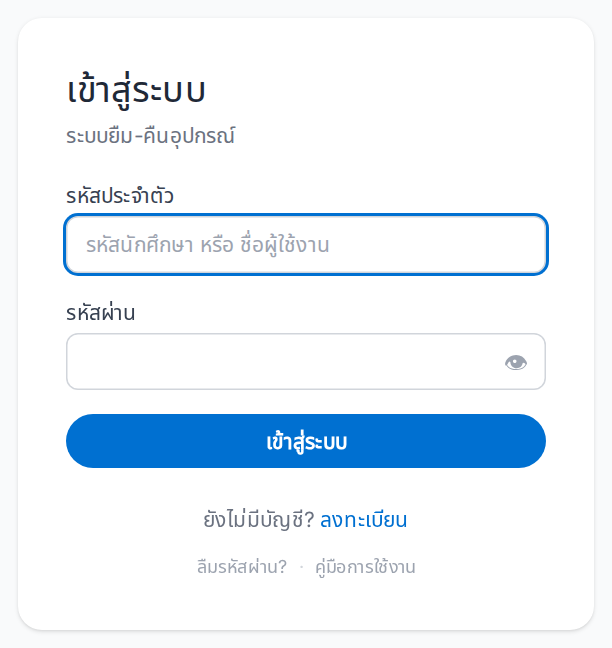
หน้าเข้าสู่ระบบ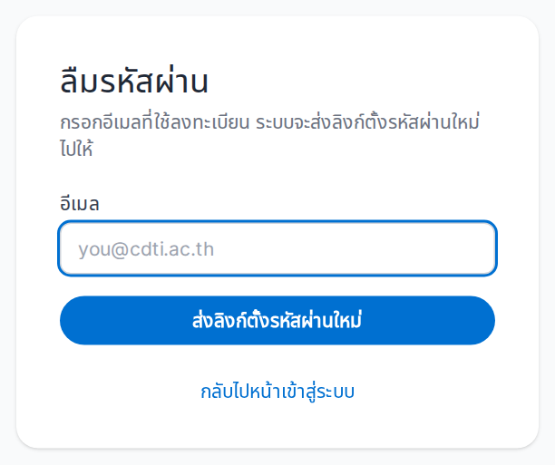
หน้าลืมรหัสผ่าน กรอกอีเมลเพื่อรับลิงก์ตั้งรหัสใหม่
ไม่ได้รับอีเมลยืนยัน หรือพิมพ์อีเมลผิดตอนสมัคร
ถ้าเข้าสู่ระบบแล้วขึ้นว่ายังไม่ได้ยืนยันอีเมล หน้าเดียวกันจะมีกล่อง "ไม่ได้รับอีเมล หรือพิมพ์อีเมลผิดตอนสมัคร?"
- ใส่อีเมลที่ถูกต้อง ถ้าอีเมลเดิมถูกอยู่แล้วให้เว้นว่าง ระบบจะส่งไปที่อีเมลเดิมอีกครั้ง
- กด ส่งลิงก์ยืนยันใหม่ แล้วเปิดอีเมลนั้นและกดลิงก์ ลิงก์ที่เคยส่งไปก่อนหน้าจะใช้ไม่ได้แล้ว
4. หน้าหลัก
หลังเข้าสู่ระบบจะมาที่หน้าหลัก ซึ่งสรุปสถานะการยืมของคุณ ได้แก่ จำนวนอุปกรณ์ที่กำลังยืมอยู่ จำนวนคำขอที่รอเจ้าหน้าที่อนุมัติ
และจำนวนรายการที่เลยวันคืนแล้ว ด้านล่างมีปุ่มลัดไปหน้ายืมอุปกรณ์และหน้าคำขอของฉัน
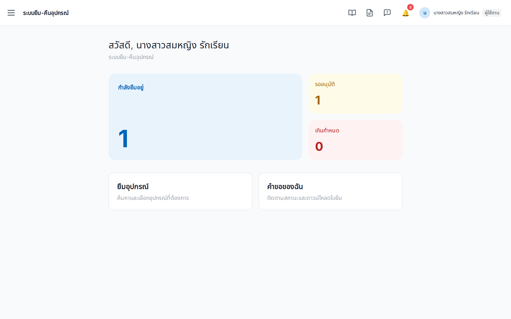
หน้าหลักของผู้ยืม
แถบด้านบนของทุกหน้ามีปุ่มเรียงจากซ้ายไปขวาดังนี้
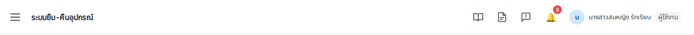
แถบด้านบน
- รูปหนังสือ เปิดคู่มือนี้
- รูปเอกสาร "มีอะไรใหม่" บอกว่าระบบเปลี่ยนอะไรบ้าง มีจุดแดงเมื่อมีเรื่องที่ยังไม่ได้อ่าน
- รูปกล่องข้อความ แจ้งปัญหาหรือข้อเสนอแนะ
- กระดิ่ง แจ้งเตือน
- ชื่อบัญชี กดเพื่อเปิดหน้าโปรไฟล์
บนมือถือเมนูถูกซ่อนไว้ ให้กดปุ่มสามขีดที่มุมซ้ายบนเพื่อเปิดเมนู
5. ค้นหาและดูรายละเอียดอุปกรณ์
เมนู อุปกรณ์ แสดงอุปกรณ์ทั้งหมดที่ยืมได้ หาของที่ต้องการได้ดังนี้
- พิมพ์ชื่อ รุ่น รหัสอุปกรณ์ หรือเลขห้องในช่องค้นหา หรือเลือกหมวดหมู่และประเภทเพื่อกรองรายการ
- กดปุ่ม สแกน QR แล้วใช้กล้องมือถือสแกนป้าย QR ที่ติดอยู่บนตัวอุปกรณ์ ระบบจะเปิดหน้าของอุปกรณ์ชิ้นนั้นให้ทันที
(ถ้ากล้องไม่เปิด ดูหัวข้อ 12)
- ถ้าไม่รู้ชื่อของ กดปุ่ม ค้นด้วยรูป แล้วกด ถ่ายรูป หรือ เลือกรูปจากเครื่อง ระบบจะขึ้น 5 รุ่นในคลังที่ใกล้เคียงที่สุด
เรียงจากใกล้สุด กดรุ่นที่ใช่เพื่อเปิดหน้ารายละเอียด ถ้าไม่มีรุ่นไหนตรงเลย ของชิ้นนั้นอาจไม่มีในคลัง
ระบบใช้รูปที่ถ่ายเพื่อค้นหาอย่างเดียวและไม่เก็บไว้
- กดที่ชื่อหรือรูปอุปกรณ์เพื่อเปิดหน้ารายละเอียด ซึ่งบอกจำนวนที่ยังเหลือให้ยืม ห้องที่เก็บ
ค่าปรับต่อวันถ้าคืนช้า และถ้ามีคนยืมอยู่ จะบอกว่าจะคืนวันไหน
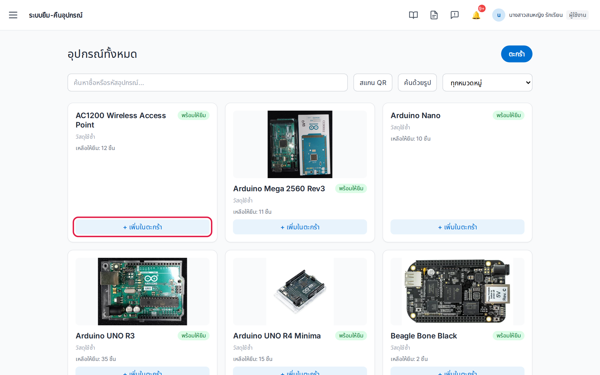
หน้ารายการอุปกรณ์ กรอบแดงคือปุ่มเพิ่มลงตะกร้า
ค้นด้วยรูป
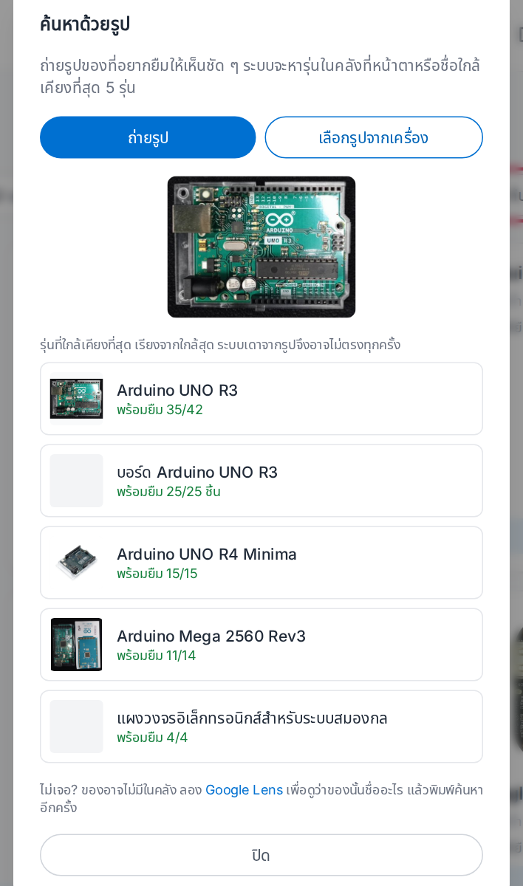
ผลค้นด้วยรูป 5 รุ่นที่ใกล้เคียงที่สุด กดรุ่นที่ใช่เพื่อดูรายละเอียด
ถ่ายให้เห็นของทั้งชิ้นชัด ๆ บนพื้นหลังโล่ง ผลจะแม่นขึ้น ระบบเดาจากหน้าตาและชื่อรุ่นในคลัง จึงผิดได้บ้าง
ก่อนกดยืมให้ตรวจชื่อรุ่นในหน้ารายละเอียดทุกครั้ง
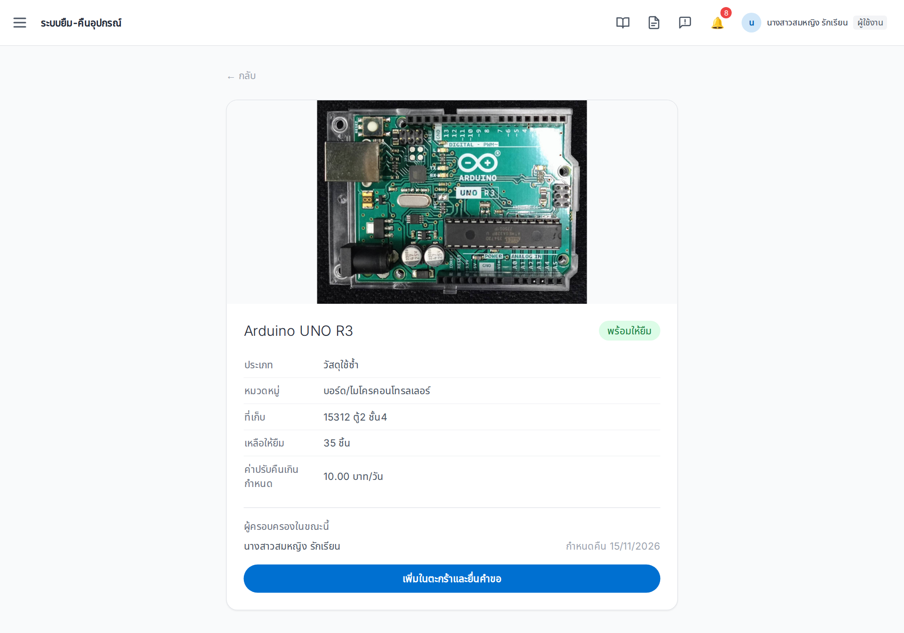
หน้ารายละเอียดอุปกรณ์ แสดงจำนวนคงเหลือ ที่เก็บ ค่าปรับต่อวัน และผู้ที่กำลังยืม
6. ยื่นคำขอยืม และลงชื่อใบยืม
การยืมทำผ่านตะกร้า เลือกได้หลายชิ้นในคำขอเดียว (สูงสุด 5 รายการต่อใบ)
- ที่หน้ารายการอุปกรณ์ กด + เพิ่มในตะกร้า ที่อุปกรณ์แต่ละชิ้นที่ต้องการ
- กดเมนู ตะกร้า ตรวจว่ารายการและจำนวนถูกต้อง แก้จำนวนหรือลบรายการได้ในหน้านี้
- เลือก วัตถุประสงค์การยืม (ต้องเลือกทุกครั้ง) ตัวเลือกสำเร็จรูปจะเติมวันคืนโดยประมาณให้ เช่น
งานในรายวิชา คืนภายใน 14 วัน ถ้าวันที่เติมให้ไม่ตรงกับที่ต้องการ แก้ในช่องวันที่ได้เลย
ถ้าเลือก "อื่น ๆ" ให้พิมพ์วัตถุประสงค์เอง
- ถ้าแต่ละชิ้นจะคืนคนละวัน ติ๊ก กำหนดวันคืนแยกรายชิ้น แล้วใส่วันของแต่ละชิ้น
- กด ดูตัวอย่างใบยืม เพื่อตรวจเอกสารก่อนส่ง แล้วกด ยื่นคำขอ
- กล่อง "ยื่นคำขอและลงชื่อใบยืม" จะขึ้นมา ใส่รหัสผ่านที่ใช้เข้าระบบ แล้วกด ยื่นคำขอและลงชื่อ
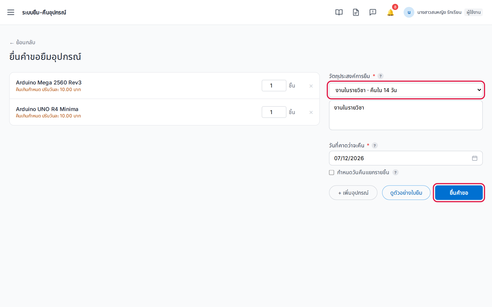
หน้าตะกร้า เลือกวัตถุประสงค์ ตรวจวันคืน แล้วกดยื่นคำขอ (กรอบแดง)
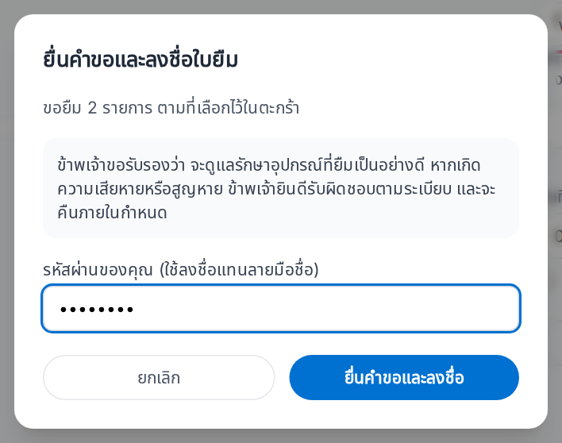
ใส่รหัสผ่านเพื่อลงชื่อใบยืมพร้อมกับการยื่นคำขอ
รหัสผ่านใช้แทนลายมือชื่อ ระบบไม่เก็บรหัสผ่านและไม่เก็บรูปลายเซ็น จะบันทึกเพียงชื่อผู้ลงนาม เวลา
และเลขอ้างอิงที่พิมพ์ไว้ท้ายใบยืม เมื่อลงชื่อตอนยื่นแล้ว ไม่ต้องไปเซ็นที่เคาน์เตอร์อีก
ส่งคำขอแล้ว หน้าจอจะบอกทันทีว่าต้องไปรับของที่ไหน และเมื่อเจ้าหน้าที่อนุมัติ ระบบจะแจ้งเตือนทางกระดิ่งและอีเมล
แต่ละคนมีคำขอที่ยังไม่คืนพร้อมกันได้ไม่เกินจำนวนที่คณะกำหนด ถ้าเกิน ต้องคืนของในคำขอเดิมก่อนจึงจะยื่นใบใหม่ได้
7. ติดตามคำขอ และรับของ
เมนู คำขอของฉัน แสดงคำขอทั้งหมดของคุณ เรียงจากใหม่ไปเก่า แต่ละแถวมีป้ายสถานะ กดที่แถวเพื่อเปิดดูรายละเอียด
ป้ายสถานะมีความหมายดังนี้
| สถานะ | ความหมาย และสิ่งที่ต้องทำ |
|---|
| รออนุมัติ | ส่งคำขอแล้ว แต่เจ้าหน้าที่ยังไม่ได้ตรวจ ระหว่างนี้ถ้าเปลี่ยนใจ กดยกเลิกคำขอเองได้ โดยต้องเลือกหรือพิมพ์เหตุผล |
| อนุมัติแล้ว | เจ้าหน้าที่อนุมัติแล้ว ให้ไปรับของตามวัน เวลา และสถานที่นัดรับที่แสดงในการ์ด
บางครั้งเจ้าหน้าที่อนุมัติให้เพียงบางชิ้น ชิ้นที่ไม่ได้อนุมัติจะมีเหตุผลเขียนกำกับไว้ |
| ถูกปฏิเสธ | เจ้าหน้าที่ไม่อนุมัติคำขอทั้งใบ จะไม่มีการจ่ายของ เปิดการ์ดเพื่ออ่านเหตุผลที่เจ้าหน้าที่ให้ไว้
ถ้ายังต้องการยืมให้ยื่นคำขอใหม่ |
| ยกเลิกแล้ว | คุณเป็นผู้ยกเลิกคำขอนี้เอง คำขอนี้ใช้ต่อไม่ได้ ถ้าต้องการยืมให้ยื่นคำขอใหม่ |
| คืนครบแล้ว | เจ้าหน้าที่รับคืนครบทุกชิ้นแล้ว คำขอนี้ปิดเรียบร้อย |
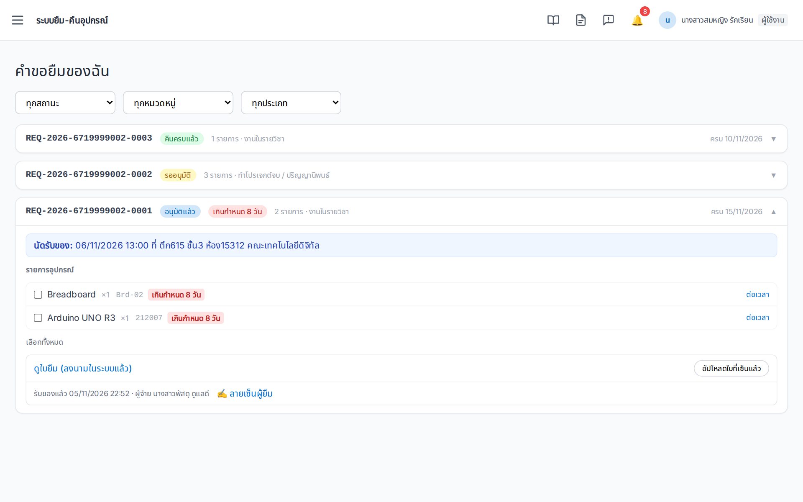
หน้าคำขอของฉัน คำขอที่อนุมัติแล้วจะเปิดรายละเอียดให้อัตโนมัติ
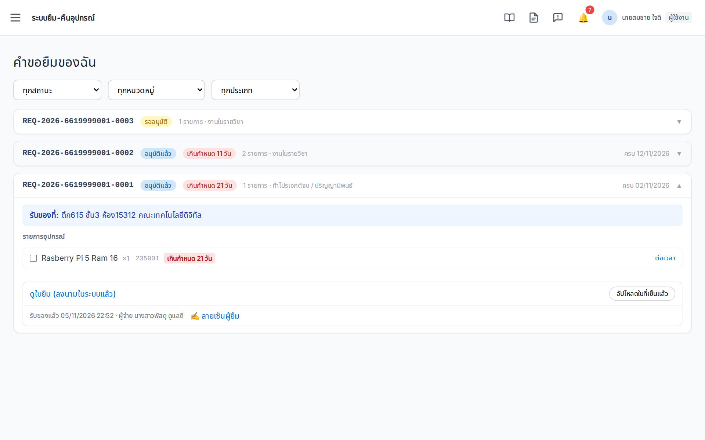
รายละเอียดคำขอที่เลยวันคืน มีป้ายแดงบอกว่าเกินกำหนดกี่วัน
ตอนไปรับของ
ไปรับของตามวันและสถานที่นัด ถ้าลงชื่อใบยืมตอนยื่นคำขอแล้ว ไม่ต้องเซ็นอะไรเพิ่ม เจ้าหน้าที่จะบันทึกการจ่ายของให้
ดาวน์โหลด ใบยืม (PDF) ได้จากการ์ดคำขอ
เมื่อการ์ดขึ้นว่า "ใบยืมยังไม่มีลายมือชื่อของคุณ"
เกิดขึ้นเมื่อเจ้าหน้าที่เปลี่ยนวันคืนตอนอนุมัติ (ระบบจะแจ้งเตือนให้ลงชื่อใหม่) หรือเป็นคำขอที่ยื่นก่อนระบบอัปเดต
กด ลงชื่อใบยืม ใส่รหัสผ่าน แล้วกด ลงชื่อ ทำจากมือถือของตัวเองได้ ไม่ต้องรอที่เคาน์เตอร์
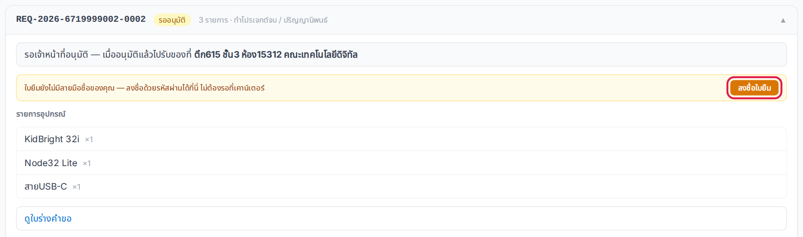
ปุ่มลงชื่อใบยืมในการ์ดคำขอ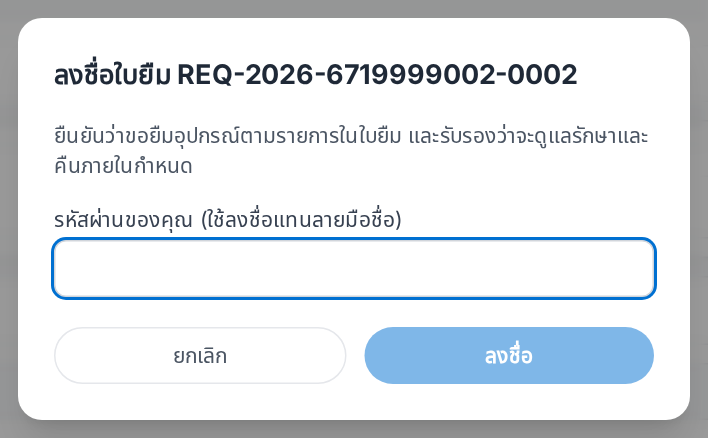
กล่องลงชื่อใบยืม8. แจ้งขอคืน และลงชื่อใบคืน
ผู้ยืมกดยืนยันการคืนเองในระบบไม่ได้ เพราะเจ้าหน้าที่ต้องตรวจสภาพของก่อนรับคืน
แต่ควรแจ้งนัดคืนล่วงหน้าทางระบบ เจ้าหน้าที่จะได้รู้ว่าใครจะมาคืนเมื่อไร
- เปิดคำขอที่อนุมัติแล้ว ติ๊กช่องหน้าอุปกรณ์ที่จะคืน จะคืนทุกชิ้นหรือคืนทีละชิ้นก็ได้
- กด แจ้งขอคืนที่เลือก
- เลือกวันและเวลาที่จะไปคืน กรอกสถานที่ที่จะไปคืน แล้วกด ยืนยันนัดคืน
- นำของไปคืนตามนัด เจ้าหน้าที่จะตรวจสภาพแล้วบันทึกรับคืน ระบบจะแจ้งเตือนเมื่อรับคืนเรียบร้อย
- หลังรับคืนแล้ว ในการ์ดคำขอจะมีปุ่ม ลงชื่อใบคืน กด เปิดดูใบคืนก่อนลงชื่อ เพื่อตรวจผลการตรวจสภาพ
แล้วใส่รหัสผ่านและกด ลงชื่อ
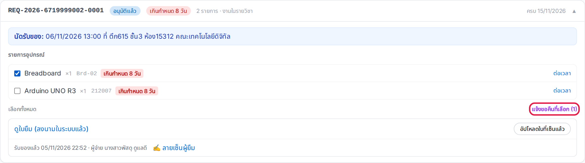
ติ๊กชิ้นที่จะคืน แล้วกดแจ้งขอคืนที่เลือก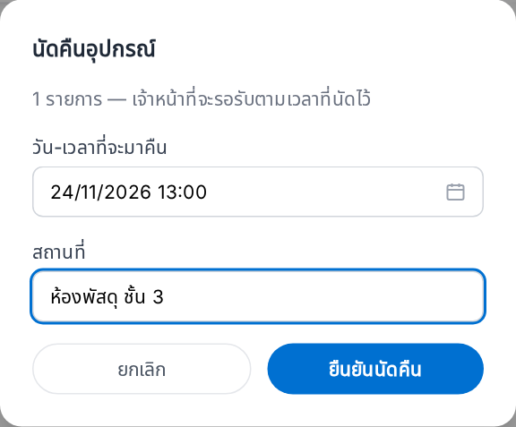
หน้าต่างนัดวัน เวลา และสถานที่คืน
9. ขอต่อเวลา
ถ้าใช้งานยังไม่เสร็จและต้องการคืนช้ากว่ากำหนด ให้ขอต่อเวลาก่อนถึงวันคืน คำขอนี้ต้องรอเจ้าหน้าที่อนุมัติ
วันคืนจะยังไม่เปลี่ยนจนกว่าจะได้รับอนุมัติ
- เปิดคำขอที่อนุมัติแล้ว กด ต่อเวลา ที่ท้ายแถวของอุปกรณ์ชิ้นที่ต้องการ
- เลือกวันที่ต้องการคืนใหม่ เขียนเหตุผลที่ขอต่อ แล้วกด ส่งคำขอ
- รอเจ้าหน้าที่พิจารณา ระบบจะแจ้งเตือนผล ถ้าอนุมัติ วันคืนในการ์ดจะเปลี่ยนเป็นวันใหม่
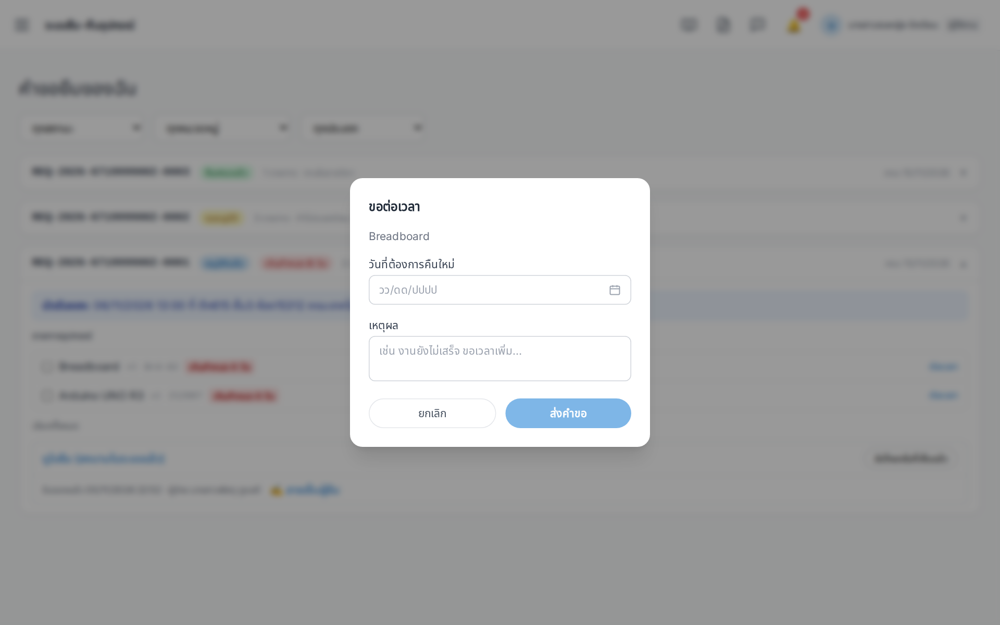
หน้าต่างขอต่อเวลา
วันที่ขอต้องอยู่หลังวันคืนเดิม และห่างจากวันนี้ไม่เกิน 30 วัน แต่ละชิ้นต่อเวลาได้ 1 ครั้ง
(ถ้าถูกปฏิเสธจะไม่นับเป็นครั้งที่ใช้ไป) ถ้ายืมระยะยาว เช่น ยืมทำโปรเจกต์ 60 วัน ระบบจะยังไม่ให้ขอต่อในช่วงแรก
ให้ขอเมื่อเหลือไม่ถึง 30 วันก่อนวันคืน
10. ค่าปรับ และการระงับการยืม
ระบบคิดค่าปรับอัตโนมัติตอนเจ้าหน้าที่รับคืน มี 2 แบบ
- คืนช้า คิดเป็นรายวันต่อชิ้น อุปกรณ์แต่ละรุ่นมีอัตราของตัวเอง ดูได้ที่หน้ารายละเอียดอุปกรณ์
(บรรทัด "ค่าปรับคืนเกินกำหนด") และในใบยืม อัตราที่ใช้คืออัตรา ณ วันที่อนุมัติ ถ้าภายหลังมีการเปลี่ยนอัตรา ของที่ยืมอยู่ไม่เปลี่ยนตาม
- ของชำรุด สูญหาย หรือเสียจนใช้ไม่ได้ คิดค่าเสียหายตามมูลค่าของอุปกรณ์ชิ้นนั้น
ถ้ามีค่าปรับที่ยังไม่ได้ชำระรวมกันตั้งแต่ 200 บาท ระบบจะระงับการยืมชั่วคราว หน้าหลักและหน้าตะกร้าจะขึ้นแถบสีแดง
และกดยื่นคำขอใหม่ไม่ได้ ให้ไปพบเจ้าหน้าที่ห้องพัสดุเพื่อชำระเงินหรือขอยกเว้น เมื่อเจ้าหน้าที่บันทึกการชำระแล้ว
ยืมได้ตามปกติทันที
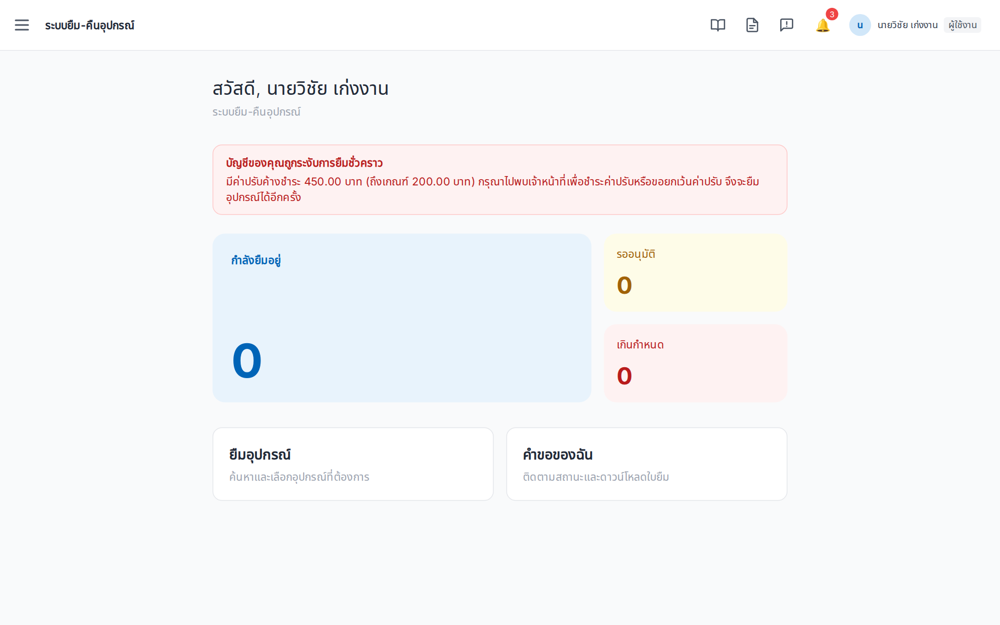
แถบสีแดงที่หน้าหลักเมื่อถูกระงับการยืม บอกยอดค้างชำระและเกณฑ์
ยอดค่าปรับที่ค้างชำระทั้งหมดดูได้ที่หน้า โปรไฟล์
11. แจ้งเตือน มีอะไรใหม่ โปรไฟล์ และแจ้งปัญหา
กระดิ่งที่มุมขวาบนแสดงแจ้งเตือนทุกเรื่องที่เกี่ยวกับการยืมของคุณ เช่น คำขอได้รับอนุมัติ ใกล้ถึงวันคืน
เลยวันคืน และรับคืนเรียบร้อย ตัวเลขสีแดงบนกระดิ่งคือจำนวนที่ยังไม่ได้อ่าน เรื่องสำคัญระบบจะส่งอีเมลถึงคุณด้วย
หน้าโปรไฟล์ใช้แก้ชื่อ-นามสกุล และเปลี่ยนรูปโปรไฟล์ สาขาแก้เองไม่ได้ เพราะระบบใช้ข้อมูลสาขาจากรายชื่อที่สาขาส่งมา
ถ้าสาขาที่แสดงไม่ถูกต้อง ให้แจ้งเจ้าหน้าที่แก้ให้
มีอะไรใหม่
เมื่อระบบเปลี่ยนวิธีใช้งาน ครั้งแรกที่เข้าสู่ระบบหลังอัปเดตจะมีหน้าต่างบอกว่าอะไรเปลี่ยน เดิมทำอย่างไร
และตอนนี้ต้องทำอย่างไร อ่านแล้วกด รับทราบ หน้าต่างนี้จะไม่ขึ้นอีกแม้เปลี่ยนเครื่อง
อยากอ่านซ้ำ กดไอคอนรูปเอกสารที่มุมขวาบน
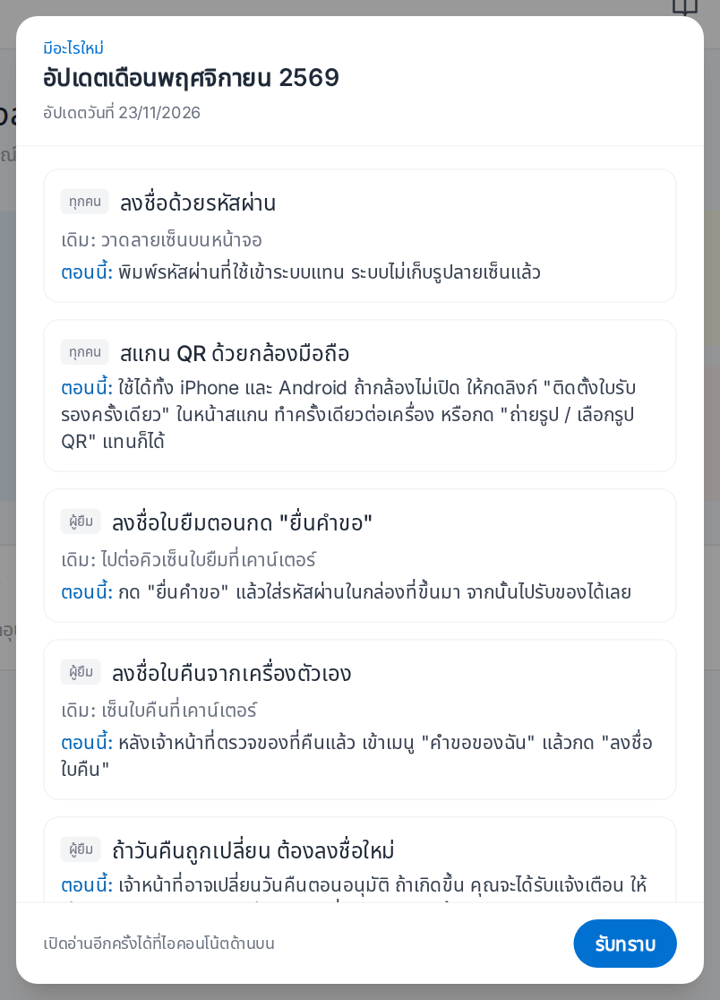
หน้าต่างมีอะไรใหม่แจ้งปัญหาหรือข้อเสนอแนะ
ถ้าเจอข้อผิดพลาดหรืออยากเสนอให้ปรับปรุง กดไอคอนกล่องข้อความที่มุมขวาบน เลือกว่าเป็นการแจ้งปัญหาหรือข้อเสนอแนะ
เล่าว่าทำอะไรอยู่และเกิดอะไรขึ้น แนบภาพหน้าจอได้สูงสุด 3 รูป แล้วกด ส่ง ผู้ดูแลระบบจะได้รับเรื่องทางอีเมล
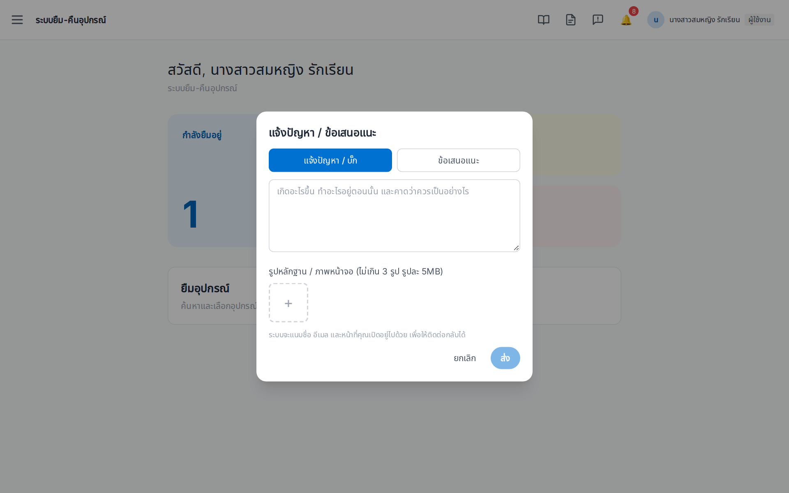
หน้าต่างแจ้งปัญหาหรือข้อเสนอแนะ
12. ใช้งานบนมือถือ และสแกน QR ด้วยกล้อง
ทุกหน้าใช้บนมือถือได้เหมือนบนคอมพิวเตอร์ เมนูถูกซ่อนไว้ ให้กดปุ่มสามขีดที่มุมซ้ายบนเพื่อเปิด
ปุ่ม สแกน QR ในหน้ารายการอุปกรณ์ใช้กล้องของมือถือสแกนป้ายบนอุปกรณ์ได้ ทั้ง iPhone, iPad และ Android
ถ้ากล้องไม่เปิด: ติดตั้งใบรับรองครั้งเดียวต่อเครื่อง
มือถือจะยอมให้เว็บเปิดกล้องเฉพาะเว็บที่เครื่องเชื่อถือ ในหน้าสแกนจะมีลิงก์ ติดตั้งใบรับรองครั้งเดียว
กดแล้วทำตามขั้นตอนบนหน้านั้น หน้าจะเรียงขั้นตอนของ iPhone/iPad หรือ Android ให้ตามเครื่องที่ใช้
- iPhone/iPad ต้องเปิดด้วย Safari และต้องทำครบทั้ง 3 ขั้น ข้อที่มักลืมคือเปิดสวิตช์ใน
ตั้งค่า แล้วไปที่ ทั่วไป, เกี่ยวกับ, การตั้งค่าความเชื่อถือใบรับรอง
- Android ดาวน์โหลดไฟล์ แล้วติดตั้งเป็น "ใบรับรอง CA" ในแอปตั้งค่า
ถ้ายังไม่สะดวกติดตั้ง กดปุ่ม ถ่ายรูป / เลือกรูป QR ในหน้าสแกนแทนได้ ใช้ได้กับทุกเครื่อง
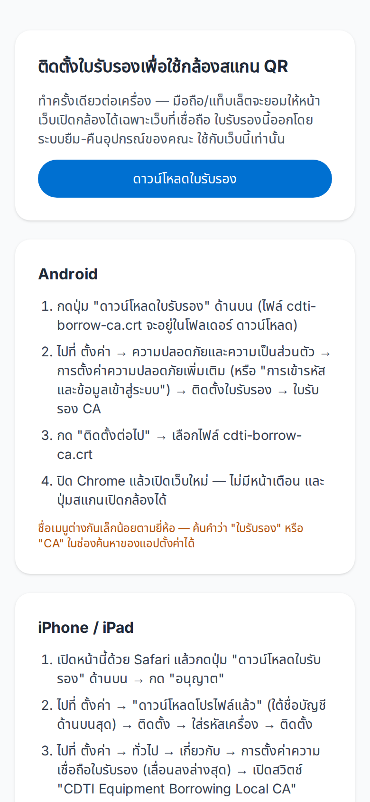
หน้าติดตั้งใบรับรอง